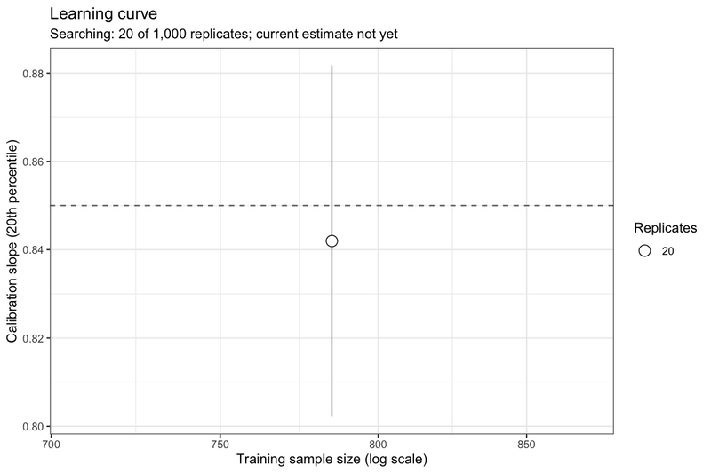
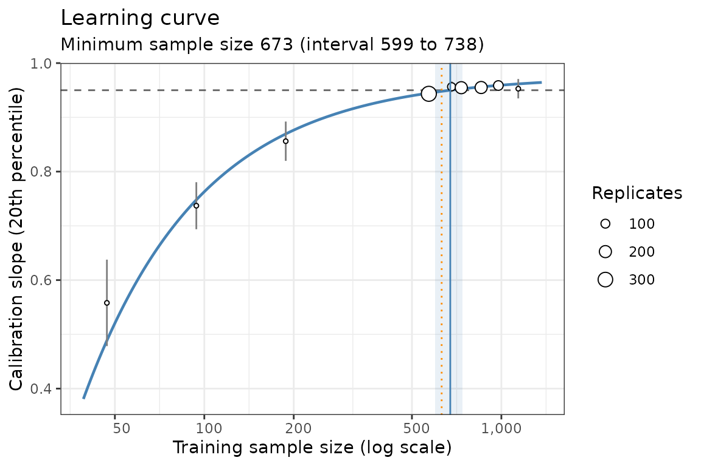

What pmsims does
pmsims estimates the minimum sample size needed to develop a prediction model to achieve a target level of performance with assurance. Rather than relying on simple rules of thumb or closed‑form formulae, pmsims uses simulation to:
- Generate synthetic datasets that reflect your target setting (outcome type, prevalence or \(R^2\), signal vs. noise predictors, and how complex the underlying signal is);
- Fit a specified model (e.g., logistic regression or linear regression);
- Evaluate a chosen performance metric (e.g., calibration slope, AUC); and
- Trace a learning curve of performance as the training size increases.
The recommended design objective is assurance: the smallest \(n\) such that a high proportion of repeated studies (e.g., 80%) meet the target performance. In pmsims, this is implemented via the 20th percentile of the simulated performance distribution at each \(n\).
Required inputs at a glance
There are three wrapper functions for binary, continuous, and survival outcomes, respectively:
All three take the same core inputs:
| Argument | Default | Description |
|---|---|---|
signal_parameters |
required | Number of predictors associated with the outcome |
noise_parameters |
0 |
Number of predictors unrelated to the outcome |
complexity |
1 |
Signal structure: 1 linear, 2 adds
quadratic terms, 3 adds an interaction, 4 the
Friedman function |
data_control |
NULL |
Correlation, distribution and nonlinear strength of the predictors
(see simulate_binary()) |
model |
"glm", "lm" or "coxph"
|
Model fitted to each simulated dataset (the penalised and machine-learning options are experimental) |
metric |
"calibration_slope" |
Performance metric: "calibration_slope",
"auc", "r2", "cindex" or
"csse"
|
target_performance |
required | Minimum acceptable performance |
n_reps_total |
1000 |
Total number of simulation replicates |
mean_or_assurance |
"assurance" |
Criterion used to choose the sample size |
The remaining inputs depend on the outcome:
| Function | Outcome-specific inputs | Models |
|---|---|---|
simulate_binary() |
maximum_achievable_cstatistic,
outcome_prevalence
|
"glm", "lasso", "ridge",
"rf", "xgboost"
|
simulate_continuous() |
maximum_achievable_rsquared |
"lm", "lasso", "ridge",
"rf", "xgboost"
|
simulate_survival() |
maximum_achievable_cindex, censoring_rate,
baseline_hazard (optional; default 1) |
"coxph", "lasso", "ridge",
"rf", "xgboost"
|
Notes:
maximum_achievable_*represents the best plausible performance with effectively unlimited data and calibrates the data generator.target_performanceis the minimum acceptable performance threshold used to determine the required sample size.complexityanddata_controldescribe the data-generating mechanism, not the model you plan to fit. The same configuration is used both to calibrate the generator againstmaximum_achievable_*and to simulate the data, so a more complex signal generally implies a larger required sample size.- For reproducibility, set a random seed (
set.seed()).
Binary-outcome example
We target the smallest n that meets the assurance criterion.
set.seed(123)
binary_example <- simulate_binary(
signal_parameters = 20,
noise_parameters = 0,
complexity = 1,
data_control = list(correlation = 0.3),
outcome_prevalence = 0.30,
maximum_achievable_cstatistic = 0.80,
model = "glm",
metric = "calibration_slope",
target_performance = 0.85,
n_reps_total = 1000,
mean_or_assurance = "assurance"
)
binary_example#> ┌────────────────────────────────────────┐
#> │ pmsims: Sample size simulation summary │
#> └────────────────────────────────────────┘
#>
#> ──────────────────────────────────── Inputs ────────────────────────────────────
#>
#> Data-generating scenario
#> Outcome Binary
#> Prevalence 0.30
#> Predictors 20 signal
#> Predictor distribution Normal
#> Predictor correlation 0.30
#> Signal form Linear
#>
#> Model and performance
#> Model Logistic regression
#> Large-sample C-statistic 0.800
#> Sample-size criterion Calibration slope ≥ 0.850
#>
#> Simulation
#> Mode Assurance
#> Replications 1,000
#>
#> ──────────────────────────────────── Results ───────────────────────────────────
#>
#> Minimum sample size 1,000
#>
#> Performance at N = 1,000
#> Calibration slope 0.850 (target ≥ 0.850)
#> C-statistic 0.790
#>
#> Running time 27 seconds
#>
#> ────────────────────────────────────────────────────────────────────────────────
#> Assurance mode selects N so that the target is achieved with high probability
#> across repeated datasets.The printed summary is a human-readable report. Implementation detail
— the internal metric identifiers, the engine settings used for the
search, and any quantities recorded on an internal search scale — is
available through summary(binary_example) or, equivalently,
print(binary_example, verbose = TRUE).
Plot the estimated learning curve and identified sample size:
plot(binary_example)The animation below shows the same search as it ran. With
live_plot = TRUE, the plot is redrawn after each batch of
20 replicates. The final frame is what plot(binary_example)
draws: the 20th percentile of the calibration slope at each simulated
sample size (point size shows the number of replicates, with ±2 standard
errors), the fitted learning curve, the target (dashed line), the
minimum sample size (solid line) with its interval (shaded), and a
shape-free cross-check (dotted line).

How the search works
By default (method = "curve"), pmsims fits
a learning curve, \(C(n) = a - b
n^{-c}\), to the criterion at every sample size simulated so far.
A pilot doubles or halves \(n\) until
the criterion has been seen on both sides of the target. Each further
batch is placed where the fitted curve crosses the target, and the
answer is where the final curve crosses it. The answer is then simulated
again with fresh replicates to check that it meets the target.
Every result has a status. "ok" means a
sample size was found and the check confirmed it. Otherwise
min_n may be NA, and
status_message explains why (for example,
"unreachable" when the curve levels off below the target).
The previous Gaussian-process engine is available with
method = "mlpwr"; see ?simulate_custom for
details of both engines.
Continuous-outcome example
continuous_example <- simulate_continuous(
signal_parameters = 15,
noise_parameters = 0,
complexity = 1,
data_control = list(correlation = 0.3),
maximum_achievable_rsquared = 0.50,
model = "lm",
metric = "calibration_slope",
target_performance = 0.95,
n_reps_total = 1000,
mean_or_assurance = "assurance"
)
continuous_example#> ┌────────────────────────────────────────┐
#> │ pmsims: Sample size simulation summary │
#> └────────────────────────────────────────┘
#>
#> ──────────────────────────────────── Inputs ────────────────────────────────────
#>
#> Data-generating scenario
#> Outcome Continuous
#> Predictors 15 signal
#> Predictor distribution Normal
#> Predictor correlation 0.30
#> Signal form Linear
#>
#> Model and performance
#> Model Linear regression
#> Large-sample R² 0.500
#> Sample-size criterion Calibration slope ≥ 0.950
#>
#> Simulation
#> Mode Assurance
#> Replications 1,000
#>
#> ──────────────────────────────────── Results ───────────────────────────────────
#>
#> Minimum sample size 673
#>
#> Performance at N = 673
#> Calibration slope 0.950 (target ≥ 0.950)
#> R² 0.491
#>
#> Running time 16 seconds
#>
#> ────────────────────────────────────────────────────────────────────────────────
#> Assurance mode selects N so that the target is achieved with high probability
#> across repeated datasets.
plot(continuous_example)